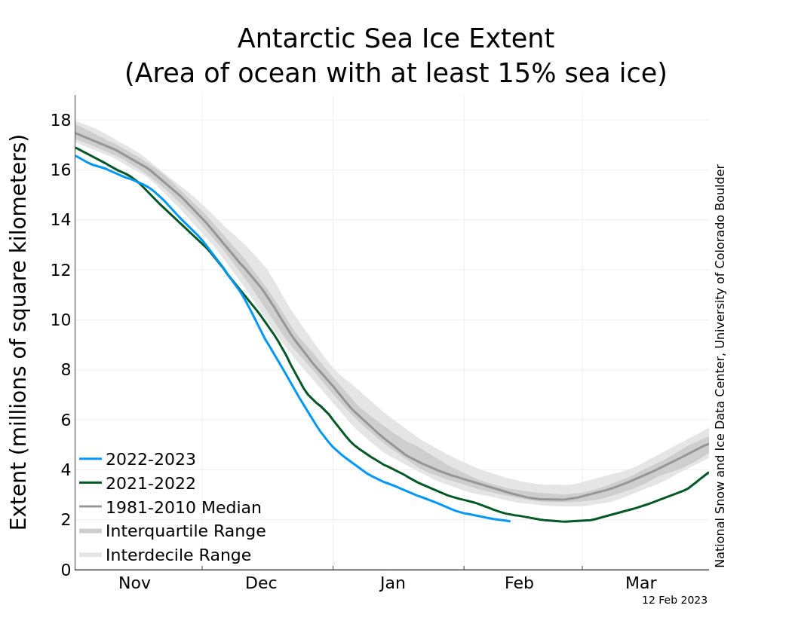

The polar regions are well known for their ice caps. In Antarctica, the land is covered in kilometers thick ice sheets, while the ocean surrounding the landmass freezes to form a large sea ice field extending to about 20 million kilometers every winter. Sea ice forms when the cold polar air freezes the surface seawater during winter. The sea ice field melts partially during summer. Both the poles have seen summer sea ice declining over the last few years, with the Arctic having seen a decline for multiple decades. Sea ice extent during summer have fallen at about -8% per decade since the 1950s. The decline of sea ice around Antarctica began more recently, around the year 2016. February 2023 may break all records for the lowest sea ice extent in the Southern Ocean! This decline is mainly driven by the excess heat that we have put into the climate system by emitting greenhouse gases.

Unintuitive though it may be, the warming climate did not result in a reduction of sea ice in the Antarctic until 2016! In fact, sea ice concentration increased by about 12% in the period from 1979 – 2011. The response of sea ice to a warming climate is quite complex as it is affected by the radiation in the atmosphere, the winds, the precipitation, the ocean currents, and the melting of glaciers along the coastline. The reasons are still a matter of scientific enquiry, but we have good candidate answers that can explain the trends we have seen this far. I will explain the current state of the science around this crucial question – why did the Southern Ocean sea ice field take so long to start responding to the warming climate?
Before considering candidate answers to our question, we need to understand the factors that affect the sea ice field. Heat can come from above or from below. The atmosphere controls the radiative heat transfer to the ocean, the winds can carry heat away and also control the rate of evaporation, and finally precipitation also results in heat transfer. The winds push sea ice, and depending on the pattern of winds, sea ice can be bunched together or pushed apart. Coastal winds act to push sea ice away, making coastal regions a site of production and export of sea ice.
From below, the ocean circulation affects how heat moves around the global ocean. In the polar regions, surface waters are colder than waters at depth. If the deep water can make it to the surface, it can elevate the temperatures there. This upwelling of deep waters is controlled by the global thermohaline circulation – the large scale overturning of waters from the equator to the poles. Ocean currents and the westerly belt of winds control the upwelling of these deep waters (click here to see a video of deep waters spiralling upwards around Antarctica). Additionally, the surface stratification of the ocean controls the amount of upwelled waters that can mix with the surface waters. The amount of freshwater that flows into the ocean from melting glaciers and from atmospheric precipitation determine how strongly or weakly stratified the surface ocean is. Weaker surface stratification allows more of the warm deep water to mix with the surface, whereas, fresher waters are lighter and they tend to inhibit the mixing of upwelled deep waters.
Now that we understand that sea ice is found within a complex web of interactions between the atmosphere, ocean, and the cryosphere, we can start exploring the factors that led to sea ice growth from the 1970s to 2016, and the eventual decline since then.